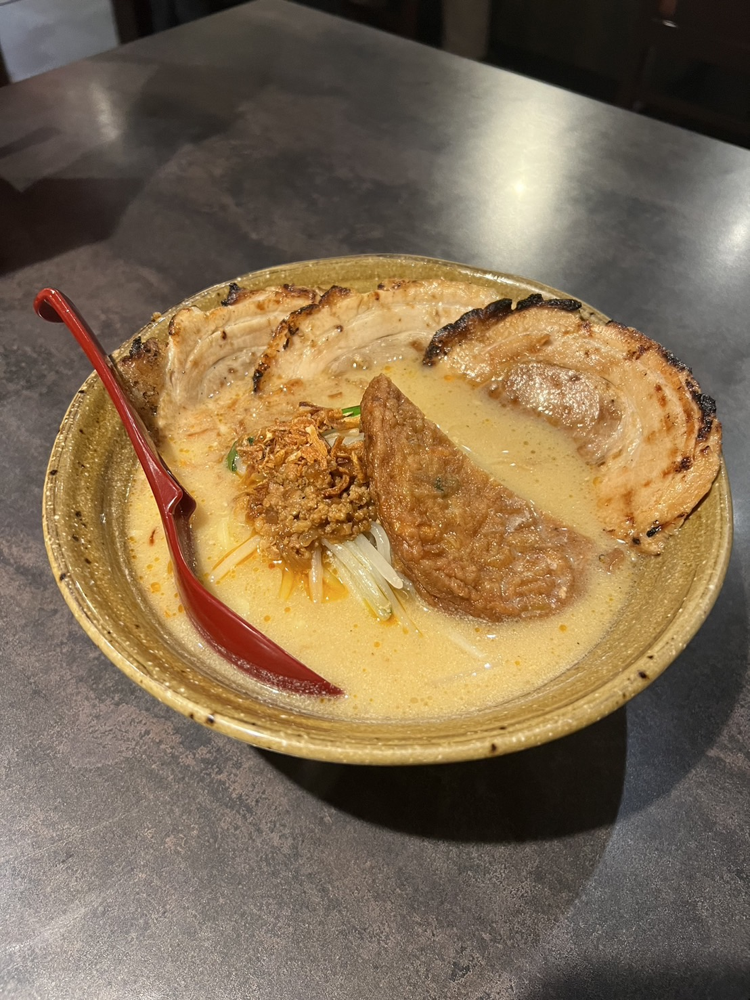
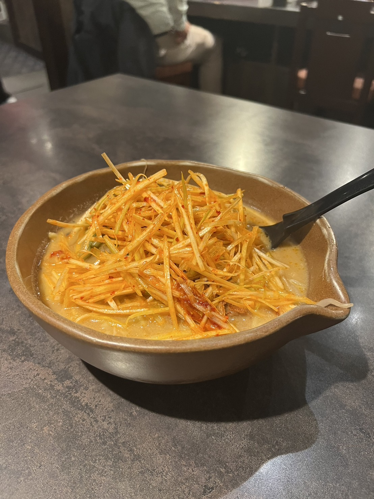

店内の雰囲気は薄暗めですが、店に入るといろいろな種類の入った味噌樽が置かれており、店内だけでも他と異なる雰囲気を楽しめる
津田沼店では「北海道味噌」、「信州味噌」、「九州麦味噌」が楽しめる
おすすめメニュー- 北海道味噌炙りチャーシュー麺

一番人気のメニューで、味噌はすっきりしているが奥ゆかしくもありつつ味噌が塗り込まれたチャーシューを直前にあぶって提供している - 九州味噌味噌漬け炙りチャーシュー麺

北海道味噌より味がマイルドで、味噌ラーメンが苦手な方でも食べやすい一品 - 信州味噌肉ネギラーメン

全国の味噌生産量の約35%を占める信州味噌は、中辛口で、トッピングには信州にちなみ、山菜が乗っている
津田沼のラーメン店ではやや高価な部類に入るが、津田沼で味噌ラーメンを食べるならぜひとも訪れたい場所である